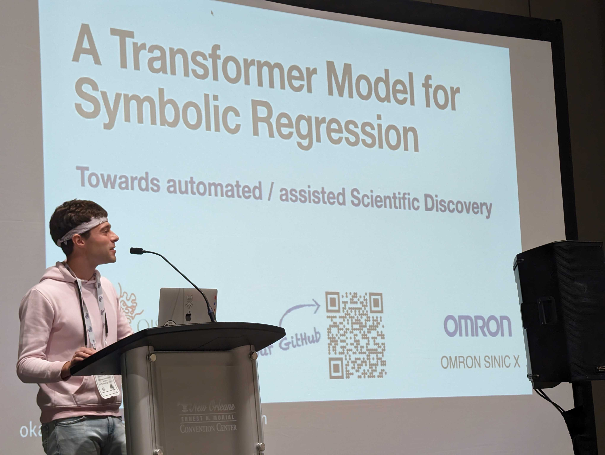

A Transformer Model for Symbolic Regression
towards Scientific Discovery
Or how to estimate a mathematical formula from few data points?
Summer internship at OMRON SINIC X (Tōkyō, 2023)
Symbolic Regression is a complex problem: provided a numerical dataset with few observed
values, can we predict a mathematical expression to explain the origin of these points?
If ever it exists...
I have been working on this problem during the summer 2023, as an internship student at
OMRON SINIC X in Tōkyō. I developed a Transformer model which predicts mathematical
operations, like "multiplication", "cosine", or "exponential", one after another.
The orignal Transformer architecture had to be adapted to work with numerical datasets.
NeurIPS 2023, AI 4 Science Workshop

The models I proposed provided with very good results on simulated datasets using
real world physical equations. I presented these results with a poster and an oral
presentation at the NeurIPS 2023 AI 4 Science Workshop, in New Orleans.
→ The paper can be accessed
here (OpenReview)
→ The code is
here (GitHub)
→ A blog post can be found
here (OMRON SINIC X website)